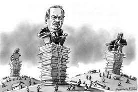

Олігархія — невелика група людей, що контролюють країну чи організацію; правляча група представників фінансово-промислового капіталу, яка зосереджує у своїх руках основну владу і визначає внутрішню та зовнішню політику країни; політичний режим, у якому влада (політична, економічна та ін.) належить невеликій, закритій та тісно згуртованій групі осіб. Олігархія — це форма владарювання, тип політичного режиму, про який писали ще давньогрецькі філософи Платон та Арістотель. Так само як мон(о)-архія — влада одного, полі-архія — влада багатьох (форма розосередженого правління, що забезпечує панування принципів плюралістичної демократії), оліг(о)-архія — це влада кількох, небагатьох. В усіх цих термінах наявне вказування на кількість володарів (один, багато, кілька) та саме слово володарювання (старогрецьке archein). Це означає, що без політичного панування олігархів не буває. Тому не слід їх плутати з багатими бізнесменами чи просто підприємливими людьми. Тільки ті багатії, котрі намагаються встановити «диктатуру небагатьох» (явну чи позалаштункову), є олігархами. Олігарх — це не просто багата людина, а один із небагатьох можновладців, що правлять у своїх приватно-групових інтересах. Олігарх — особа, що володіє великою власністю в країні, та має вагомий вплив на державні органи влади. З політологічної точки зору олігархи — це можновладці, які використовують монополізовані ними сектори економіки для концентрації у своїх руках політичної влади, а політичну владу — для збільшення власних капіталів. Сучасні олігархи володіють багатоманітними суспільними ресурсами: економічними (промислові та фінансові підприємства й установи), інформаційними (друковані та електронні ЗМІ), політичними (партії, парламентські групи й фракції, важливі державні посади, вплив на перших осіб у державі). Олігархія — це явище, або коли бюрократія (мер, губернатор, уряд) є «ведучою силою», або коли цією силою є великі фінансово-інформаційні угрупування. Олігархія — це явище зрощування цієї «ведучої сили» і державної влади. Це коли державна влада користується послугами бізнесу, а бізнес, в свою чергу, формує цю владу: може міняти тих чи інших керівників: якщо неслухняний, то тоді ставлять слухняного, якщо слухняний — з нього вибивають гроші. Це коли бюрократія має напряму контакти з бізнесом: своїм бізнесменам щось допомагають, а в свою чергу ті допомагають уряду. Це одна ситуація. Друга ситуація, це коли сам бізнес настільки сильний, що він керує державним керівництвом як ляльками і маріонетками. Головний наслідок олігархії, що є вузька група багатих, і величезна група бідних. На початку 20-го століття Роберт Міхельс розробив теорію, згідно з якою будь-які форми демократії, як і всі великі організації, мають тенденцію перетворюватися в олігархії. У своєму «Залізному законі олігархії» він стверджує, що необхідний поділ праці в великих організаціях призводить до створення керівного класу, котрий переважно переймається захистом своєї власної влади. Основу для олігархії в пострадянських країнах було створено в радянський час. Тоді управління підприємством, міністерствами і управління країною — були одне й те ж: політбюро приймало рішення, воно проходило через міністерство, то давало команди на заводи, гроші вверх, блага вниз. Ось така радянська система була схильною до олігархії. Потім вона трансформувалась в пострадянське явище. Щоб не було олігархії, мають бути прозорі рівні правила, які повинні працювати для всіх без виключень і при цьому і преса, і опозиція, і всі хто завгодно, в тому числі і державна влада повинні відмінно знати що відбувається: в першу чергу з бюджетними грошами, у другу чергу — з власністю. Ще Михайло Горбачов у 1994 році в передачі «Час пік» Владислава Лістьєва різко критикував представників тогочасної влади за втрату гласності, за монополізацію частини преси урядом, через що та вже знаходиться на пайку і вже не самостійна, а друга частина — теж не самостійна і знаходиться на пайку в фінансових і промислових груп, і в газетах абсолютно не та картина, яка відбувається в житті, і телебачення починає ставати таким же.
| Перейти на головну сторінку | Демократія | Комунізм | Олігархія |